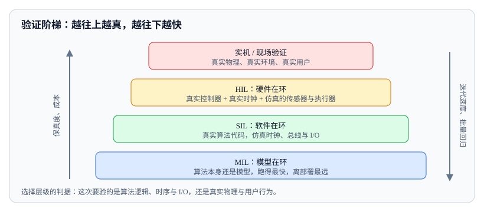

<script type="application/json" id="tb-manifest">
{
  "schema": "tb/1",
  "id": "L-002-004",
  "title": "SIL、HIL 与实时仿真验证",
  "module": "M02",
  "concepts": [
    "sil-hil-validation"
  ],
  "target_level": "L3",
  "minutes": 55,
  "objectives": [
    "能为一个验证目标选择合适的 MIL/SIL/HIL/实机层级",
    "能写出可复现的实时仿真验证方案并解释保真度边界",
    "能识别仿真通过但实机失败的典型作弊写法"
  ],
  "prerequisites": [
    "test-levels-shift",
    "task-chain-fault-injection"
  ],
  "exercises": [
    "EX-011-01",
    "EX-011-02",
    "EX-011-03"
  ],
  "resources": [
    "R-29119-2",
    "R-ROS2-SIMULATORS",
    "R-ASAM-OPENSCENARIO"
  ],
  "objective_map": {
    "O1": [
      "EX-011-01"
    ],
    "O2": [
      "EX-011-02"
    ],
    "O3": [
      "EX-011-03"
    ]
  }
}
</script>
<article class="tb-lesson">
  <header>
    <p class="tb-eyebrow">M02 · 设计与验证：方法、任务链、预言与实验</p>
    <h1>SIL、HIL 与实时仿真验证</h1>
    <p><strong>学完你能：</strong>面对一个具体验证目标，说清为什么选这个层级而不是下一层或上一层，并写出别人能照着复现的实时仿真方案。</p>
  </header>
  <section class="tb-retrieval">
    <h2>开课前 3 分钟：先回忆</h2>
    <p>先不要翻前文，用两句话回答：</p>
    <ol>
      <li>你们团队的自动化回归，跑在什么环境上？这个环境和你交付的机器人差在哪？</li>
      <li>上一次“仿真全绿、实机出问题”，最可能漏掉的是哪个物理或时序环节？</li>
    </ol>
    <details>
      <summary>参考答案</summary>
      <p>仿真环境通常在时钟精度、传感器噪声模型、执行器响应和网络抖动上与实机不同；漏掉最多的是时序与真实感知输入，而不是算法逻辑本身。</p>
    </details>
  </section>
  <aside class="tb-callout" data-tone="info">
    <p><strong>本课主读：</strong>R-ROS2-SIMULATORS 用于搭环境与接时钟；R-ASAM-OPENSCENARIO 用于写可交换的场景描述；R-29119-2 提供测试过程与判据的组织方式。三者分别解决“跑得起来”“场景可复现”“结论可审计”。</p>
  </aside>
  <section>
    <h2>一、仿真全绿，实机首周三次误停</h2>
    <p>某园区配送机器人在发布前跑了 2,400 条 SIL 回归，全部通过。上线第一周，现场出现三次误停：两次发生在雨后地面反光的斜坡入口，一次发生在人车混行区的窄通道。研发第一反应是“算法没改，怎么会出问题”；测试团队把三条现场日志拿回实验室，在 SIL 里重放，结果依然全绿。</p>
    <p>问题不在算法，也不在回归数量，而在<strong>验证层级和真实系统之间的差距</strong>。SIL 里，摄像头输入是一段录好的视频，光照不会因为地面湿滑而改变；底盘延迟是一个固定值；时间戳来自同一台机器的单调时钟。实机上，这三项全是变量。测试团队验证了逻辑，没有验证“逻辑在真实时序和真实输入下还成立”。</p>
    <p>这一课要解决的就是：面对一个验证目标，选哪一级、怎么让这一级可信、以及怎么诚实地写出它证明了什么、没证明什么。</p>
  </section>
  <section>
    <h2>二、MIL、SIL、HIL 与实机各回答什么</h2>
    <p>“仿真”是一个笼统的词。工程上至少要分成四级，因为它们的被测对象、时钟来源和能发现的缺陷完全不同。</p>
    <figure>
      
      <figcaption>图 1：验证阶梯。层级选择不是“越真越好”，而是“这次要验的东西在哪一层才暴露”。</figcaption>
    </figure>
    <table>
      <thead>
        <tr><th>层级</th><th>被测对象</th><th>时钟来源</th><th>典型判据</th><th>能发现</th><th>发现不了</th></tr>
      </thead>
      <tbody>
        <tr><td>MIL 模型在环</td><td>算法模型（MATLAB/Simulink 或 Python 原型）</td><td>仿真时钟，可任意加速</td><td>算法输出与参考轨迹的偏差</td><td>算法逻辑错误、参数敏感性</td><td>代码实现差异、时序、I/O</td></tr>
        <tr><td>SIL 软件在环</td><td>真实产品代码，跑在开发机或容器里</td><td>仿真时钟，通常可加速</td><td>消息级断言、状态机终态</td><td>实现错误、接口契约、逻辑分支</td><td>实时性、驱动、总线时序</td></tr>
        <tr><td>HIL 硬件在环</td><td>真实控制器 + 真实 I/O，接仿真被控对象</td><td>真实时钟（硬实时）</td><td>端到端延迟、抖动、安全功能响应</td><td>实时性、调度、驱动、总线负载</td><td>真实传感器物理、真实用户行为</td></tr>
        <tr><td>实机 / 现场</td><td>整机 + 真实环境 + 真实用户</td><td>物理世界</td><td>任务成功率、安全距离、现场工单</td><td>物理交互、环境长尾、人因</td><td>难以复现、成本高、样本少</td></tr>
      </tbody>
    </table>
    <p>选择层级的判据只有一句话：<strong>这次要验证的失效模式，在哪一层才会暴露。</strong>如果怀疑的是“规划器在窄通道里选错路径”，SIL 足够；如果怀疑的是“感知延迟变大时控制器来不及制动”，必须上 HIL；如果怀疑的是“雨天反光导致误检”，只能靠实机或高保真传感器注入。</p>
  </section>
  <section>
    <h2>三、时钟与实时预算</h2>
    <p>SIL 和 HIL 最本质的差别不是模型精度，而是<strong>时钟是不是真的</strong>。SIL 里你可以把 10 秒的仿真跑到 0.2 秒，这让人误以为系统有 50 倍余量；HIL 里时间就是时间，控制周期 100 Hz 意味着每 10 ms 必须算完一轮，超时就是超时。</p>
    <table>
      <thead>
        <tr><th>仿真步长</th><th>控制周期 100 Hz 下的余量</th><th>适用场景</th><th>风险</th></tr>
      </thead>
      <tbody>
        <tr><td>1 ms</td><td>每周期 10 步</td><td>安全功能、力控、高动态避障</td><td>算力开销大，长场景跑不动</td></tr>
        <tr><td>4 ms</td><td>每周期 2–3 步</td><td>导航、局部规划、任务链</td><td>快速瞬态被平滑掉</td></tr>
        <tr><td>10 ms</td><td>与周期同拍</td><td>任务调度、状态机、慢速流程</td><td>抖动和丢帧完全看不见</td></tr>
      </tbody>
    </table>
    <p>步长不是越小越好，而是要和<strong>你要观测的最短时间尺度</strong>对齐。要判“制动指令到实际减速的延迟是否超过 80 ms”，步长必须显著小于 80 ms，否则你测到的是仿真的量化误差，不是系统的延迟。</p>
    <pre data-tb-block="code" data-language="bash"><code># 用固定步长跑 SIL，并把仿真时钟锁定到 rosbag 的时间戳
ros2 run my_simulator sim_node --ros-args \
  -p use_sim_time:=true \
  -p step_ms:=4 \
  -p real_time_factor:=1.0

# 回放一段现场日志；--clock 让所有节点用仿真时间
ros2 bag play field_run_20261012 --clock --rate 1.0</code></pre>
    <aside class="tb-callout" data-tone="warn">
      <p><strong>常见误区：</strong>把 <code>real_time_factor</code> 调成 5 跑得快，然后拿这份结果当实时性证据。加速仿真只能证明逻辑，不能证明时序——实时性结论必须来自 <code>real_time_factor=1.0</code> 且步长不大于判据时间尺度十分之一的运行。</p>
    </aside>
  </section>
  <section>
    <h2>四、场景库与可复现性</h2>
    <p>仿真最大的价值是“同一个场景可以跑一万次”。但前提是每次真的是同一个场景。用手工脚本拼场景，参数散落在代码里、随机种子没记录、地图版本没锁，第二次跑出来的就不是同一个东西，这样的回归结果没有比较意义。</p>
    <p>工程做法是把场景描述成<strong>数据</strong>，而不是代码。ASAM OpenSCENARIO 用 XML 描述实体、初始位姿、动作序列和触发条件，主机厂、供应商和仿真工具之间可以交换同一份场景文件。机器人领域不一定直接用它，但“场景即数据”的结构值得照搬：实体、初始条件、动作、触发条件、结束条件五段。</p>
    <pre data-tb-block="code" data-language="yaml"><code># 场景参数块：每个变量都能被单独扫描，种子单独记录
scenario: pedestrian_crossing_on_turn
map: campus_loop_v7                 # 地图版本要锁死
seed: 20261104                      # 随机种子必须落盘
parameters:
  pedestrian_speed_mps: {range: [0.8, 2.0], step: 0.2}
  entry_offset_s:       {range: [0.0, 1.5], step: 0.1}
  wet_ground:           [false, true]
  sensor_noise_profile: [clean, field_2026_10]
assertions:
  min_gap_m: 0.5
  max_stop_time_ms: 600</code></pre>
    <p>判定一份仿真方案是否可复现，看四样东西是否都在：地图与模型版本、随机种子、参数取值、以及“失败时保存的完整回放”。缺任何一样，失败都无法复现，结论也就无法下钻。</p>
  </section>
  <section>
    <h2>五、传感器与执行器建模的保真度边界</h2>
    <p>仿真里的传感器是代码写的，不是物理的。每一种建模方式都有自己的盲区，盲区对应的就是逃逸风险。</p>
    <table>
      <thead>
        <tr><th>部件</th><th>常见建模方式</th><th>典型盲区</th><th>对应的逃逸风险</th></tr>
      </thead>
      <tbody>
        <tr><td>摄像头</td><td>渲染引擎出图 + 噪声叠加</td><td>反光、过曝、雨雾衰减、镜头污渍</td><td>雨天误检、夜晚漏检</td></tr>
        <tr><td>激光雷达</td><td>射线投射 + 高斯噪声</td><td>多回波、玻璃穿透、雨雾散射</td><td>玻璃门被当成通路</td></tr>
        <tr><td>IMU</td><td>真值加白噪声与零偏</td><td>温漂、振动耦合、饱和</td><td>长时间航位推算漂移</td></tr>
        <tr><td>GNSS</td><td>按可见卫星数给精度</td><td>多路径、地下车库拒止、隧道重捕获</td><td>车库内定位跳变</td></tr>
        <tr><td>执行器</td><td>一阶惯性或固定延迟</td><td>死区、摩擦、负载相关延迟、温度影响</td><td>低速爬行、制动距离超差</td></tr>
      </tbody>
    </table>
    <p>写验证方案时，必须为每个被仿真替代的部件标注“替代方式 + 已知盲区 + 用哪一级补偿”。这一行不写，评审时无法判断结论的适用范围，后续出问题也没人知道该往哪里补。</p>
  </section>
  <section>
    <h2>六、实例：行人横穿在 HIL 上怎么验</h2>
    <p>场景：园区配送机器人以 1.2 m/s 直行，行人从右侧 3 m 处按 1.5 m/s 横穿。要验证的失效模式是“行人进入后，机器人能否在 0.5 m 安全间隙前停住”。这不是纯算法问题，延迟占主导，所以选 HIL。</p>
    <table>
      <thead>
        <tr><th>节点</th><th>HIL 实测</th><th>实机实测</th><th>差额来源</th></tr>
      </thead>
      <tbody>
        <tr><td>感知输出延迟</td><td>20 ms</td><td>35 ms</td><td>真实曝光与驱动链路</td></tr>
        <tr><td>规划重算</td><td>45 ms</td><td>48 ms</td><td>负载差异</td></tr>
        <tr><td>制动指令下发</td><td>15 ms</td><td>22 ms</td><td>总线仲裁与驱动</td></tr>
        <tr><td>执行器响应</td><td>60 ms</td><td>85 ms</td><td>摩擦与负载</td></tr>
        <tr><td>端到端</td><td>140 ms</td><td>190 ms</td><td>累计 50 ms</td></tr>
      </tbody>
    </table>
    <p>判据这样写：端到端延迟 ≤ 200 ms，且在 1.2 m/s 下停车距离 ≤ 0.5 m。HIL 的 140 ms 给了 60 ms 余量；实机的 190 ms 只剩 10 ms 余量。这个结论比“HIL 通过”有用得多：它告诉你余量在哪里被吃掉了，下一版该优化执行器还是感知。</p>
    <aside class="tb-callout" data-tone="info">
      <p><strong>写法建议：</strong>判据里同时写“通过线”和“实测值 + 余量”。只写通过/不通过，评审无法判断这条结论有多脆；写出余量，评审才知道哪里最该先改。</p>
    </aside>
  </section>
  <section>
    <h2>七、失败模式：仿真作弊的六种写法</h2>
    <p>仿真验证最容易失效的方式，不是模型不准，而是<strong>为了让测试通过而悄悄改条件</strong>。以下六种写法在评审里必须被点名。</p>
    <ul>
      <li><strong>加速时钟。</strong>用 5 倍速跑完，再声称实时性达标。</li>
      <li><strong>理想输入。</strong>用真值位姿代替定位输出，用干净图像代替现场图像。</li>
      <li><strong>固定延迟。</strong>把底盘延迟写死成最优值，屏蔽抖动。</li>
      <li><strong>事后调参。</strong>失败后改场景参数重跑，直到通过，且不记录改了什么。</li>
      <li><strong>断言放水。</strong>把安全间隙从 0.5 m 调到 0.2 m，理由是“现场不会这么近”。</li>
      <li><strong>样本挑选。</strong>只报通过的 20 次，不报失败的那 3 次。</li>
    </ul>
    <aside class="tb-callout" data-tone="error">
      <p><strong>红线：</strong>仿真结论必须能回答“如果条件变差，结论还成立吗”。任何一条让条件单向变好的改动，都要在报告里显式写出，并说明理由。</p>
    </aside>
  </section>
  <section>
    <h2>八、检查清单</h2>
    <ul>
      <li>验证目标写清了吗？要验的是逻辑、时序，还是物理交互？</li>
      <li>层级选择有理由吗？为什么不是下一层或上一层？</li>
      <li>时钟是真的吗？步长是否小于判据时间尺度的十分之一？</li>
      <li>地图、模型、随机种子、参数取值都锁定了吗？</li>
      <li>每个被仿真替代的部件，盲区都写了吗？补偿层级写了吗？</li>
      <li>判据有通过线和实测余量吗？</li>
      <li>失败样本保存了吗？能被别人用同一份回放复现吗？</li>
      <li>有没有为了让结果变好而单向放宽条件？</li>
    </ul>
  </section>
  <div data-tb-exercise="EX-011-01"></div>
  <div data-tb-exercise="EX-011-02"></div>
  <div data-tb-exercise="EX-011-03"></div>
  <section>
    <h2>小结</h2>
    <p>仿真不是“便宜的实机”，而是“回答特定问题的实验装置”。MIL 回答算法对不对，SIL 回答代码实现对不对，HIL 回答时序与实时性对不对，实机回答物理世界对不对。选错层级，跑得再多也只是在验证一个不存在的系统；选对层级，再写清保真度边界和余量，一份 200 行的验证报告就能支撑一次发布决策。</p>
  </section>
</article>